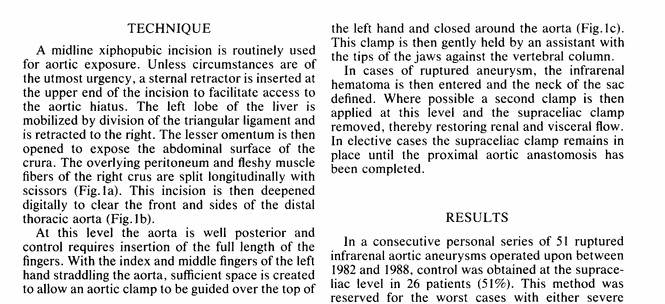

· Spiral CT with
contrast ± 3D reconstruction
— Confirm:
Size
Diameter, shape
& character of neck
Diameter &
tortuosity of iliacs
— If OK ® calibrated aortogram
· Aortogram
— Neck
³ 20 mm long from
renal arteries
< 30 mm diameter
<30° angulation
°thrombus /
irregular calcification in neck
° flared
— Iliacs
³ 7mm to accommodate
graft
Tortuosity /
calcification make deployment difficult
AAA
(Ruptured)
· Cell saver, anasethetic management of
blood turnover and replacement agents, infusion lines and
monitoring as appropriate
Forced air warming devices to preserve
temparture and thus coagulation.
Transperitoneal
midline access
Supine, both arms abducted
· (Shave), Prep,
drape - exposing both groins (± set up retractor) prior to
induction
— (Depends on
clinical state of pt)
· Midline incision
xiphi - pubis
· ± control supra
coeliac aorta with direct pressure of aorta against L spine
· Incise posterior
peritoneum lateral to D-J flexure
· Mobilise D-J &
SB mesentery on AAA to (R)
· Blunt dissection to
define neck
· Initial digital
control of neck
· Assess for &
place proximal clamp
— Can use
intraaortic ballon control initially
· For supra coeliac
control
— Incise
gastrocolic omentum
— Incise R crus
— Blunt dissection
of aorta laterally L & R
— Place straight
clamp
· Once proximal
control gained:
— Place retractors
— Expose &
clamp iliacs (identify v & ureter)
— Resuscitate
· Identify IMA
— Assess patency
— Ligate &
transect if patent & no compromise to colon
— Or if
compromise on assesment excise button of AAA with IMA
· Open AAA
· Evacuate contents
· Control bleeding
lumbars
· Prosthetic graft
replacement; tubed or bifurcated as necessary.
— Dacron / PTFE
· Proximal
anastomosis with 3-0 prolene
· Clamp graft
· Assess proximal
suture line by release of proximal clamp
· Reapply proximal
clamp distal to anastomosis
· Irrigate &
suction graft
· Stretch & cut
to length
· Distal
anastomosis(es) with 3-0 prolene
· Flush aorta from
above & below prior to completion of anastomoses
— If ° back
bleeding ® thrombectomy of
iliacs
· Slowly release
clamp
· Assess iliac &
femoral pulses
· Reimplant IMA if
necessary using Satinsky
· Confirm haemostasis
· Close aneurysm sac
over graft
· Appose peritoneum
Notes:
1.
Depending on length of neck, may need to mobilise the left renal
vein.
After division of ligament of Treitz, expose and mobilize the left
renal vein.
- ligate left adrenal, gonadal and renal-lumbar veins to expose
the left renal artery and suprarenal aorta.
2. Proximal Control